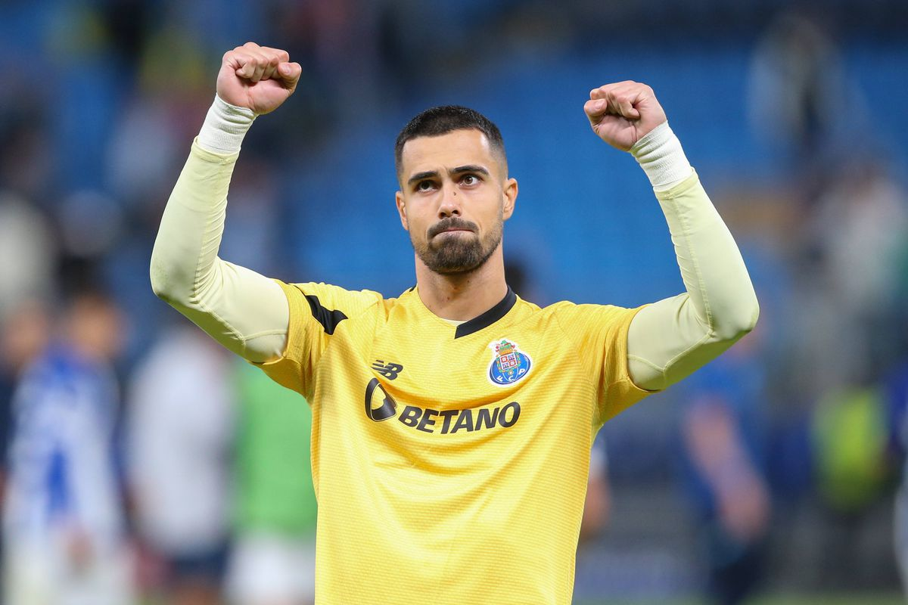
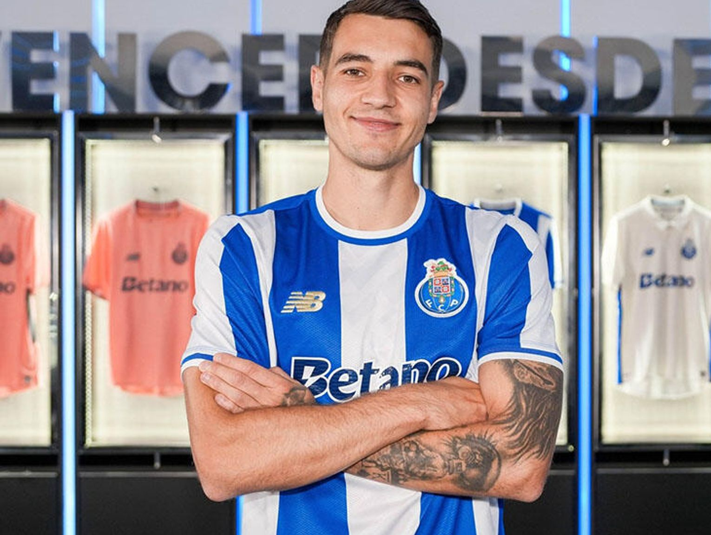
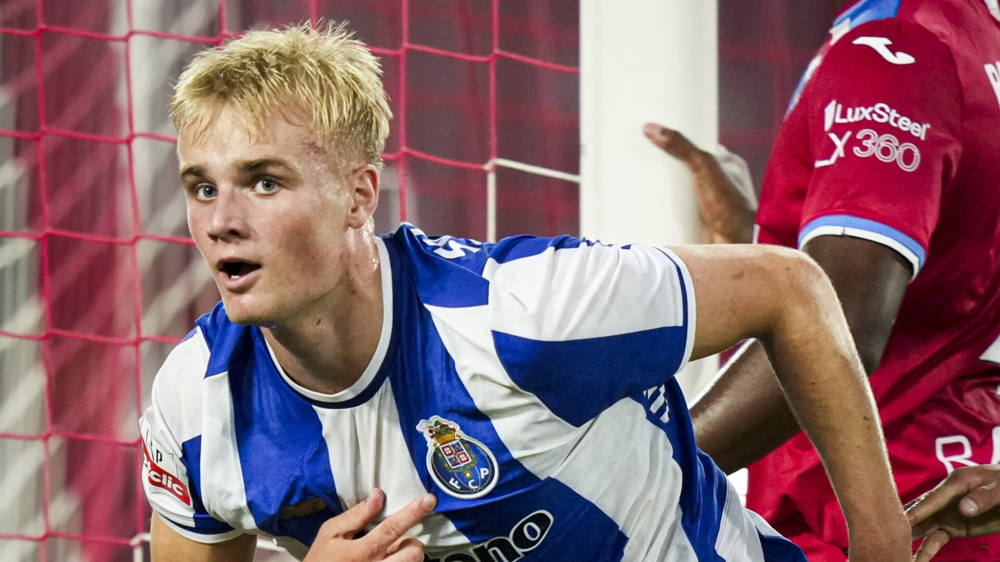
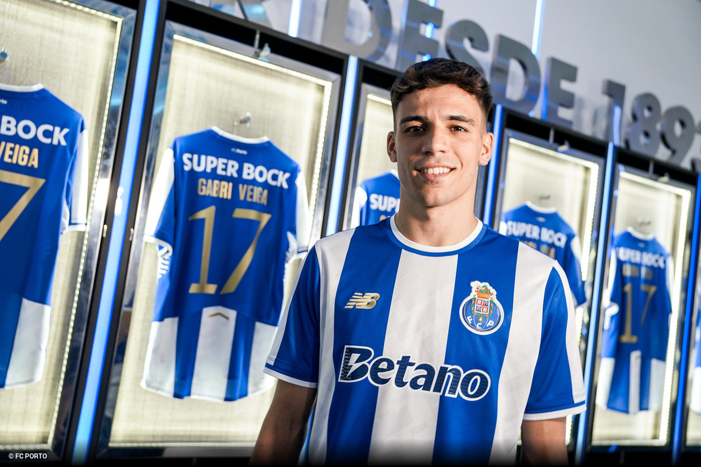
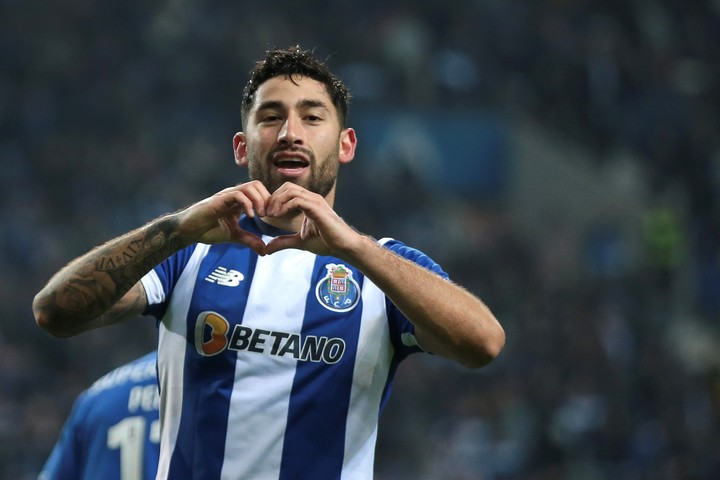
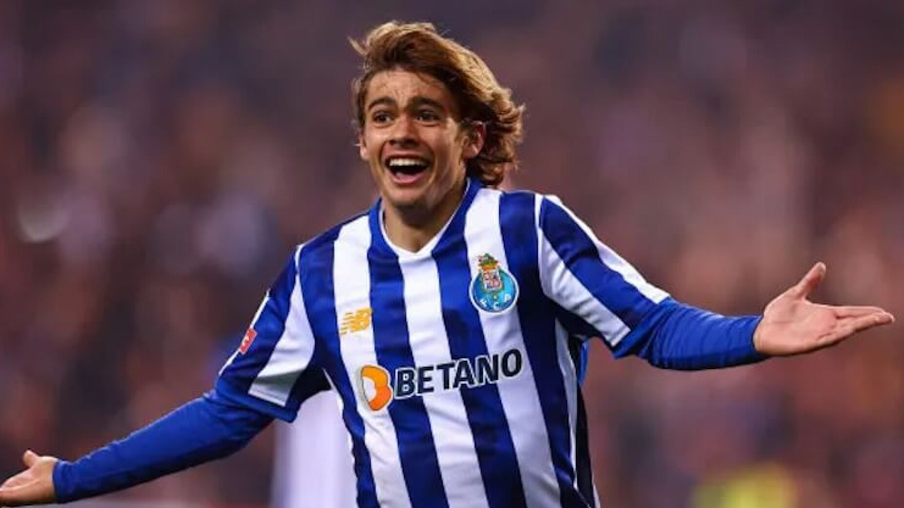
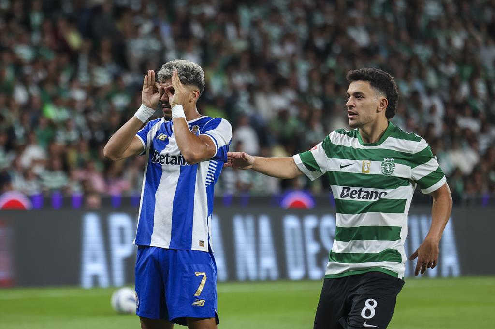
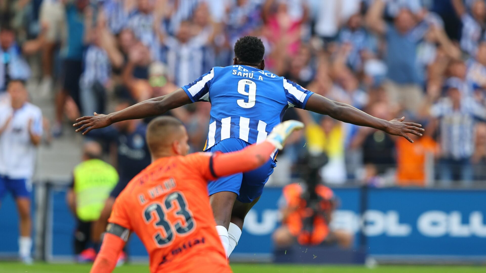
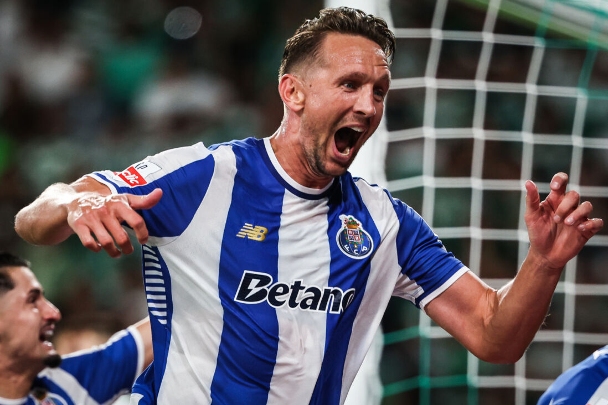

Plantel Atual
O Orgulho da Invicta
Plantel
O Porto fez um grande investimento no plantel atual, então temos alguns resumos dos jogadores principais deste plantel, clique embaixo no nome do jogador que quiser conhecer mais:
Na imagem acima temos o atual capitão do Porto Diogo Costa depois do jogo Vitória SC 1-2 FC Porto (11/11/2023)
Nesta Imagem temos Jakub Kiwior na sua apresentação (01/09/2025)

Na imagem acima temos Jan Bednarek durante a sua apresentação (28/07/2025)

Já Nesta imagem temos Alberto Costa também durante a sua apresentação
Na imagem acima temos Victor Froholdt depois do seu golo na vitória Gil Vincente 0-2 FC Porto (18/08/2025)
Nesta Imagem temos Gabri Veiga durante a sua apresentação (05/06/2025)
Aqui temos Alan Varela depois do seu golo na vitória do Porto por 5-0 contra o Moreirense (20/01/2024)
Nesta Imagem temos Rodrigo Mora depois do seu golo na vitória por 4-0 contra o Boavista (28/12/2024)
Já nesta imagem temos William Gomes após o seu golaço contra o Sporting na vitória por 1-2 (30/08/2025)
Aqui vemos Samu depois do seu golo decisivo na vitória por 2-1 contra o Farense (15/09/2024)
Nesta imagem vemos Luuk de Jong após o seu golo na vitória contra o Sporting por 1-2 (30/08/2025)